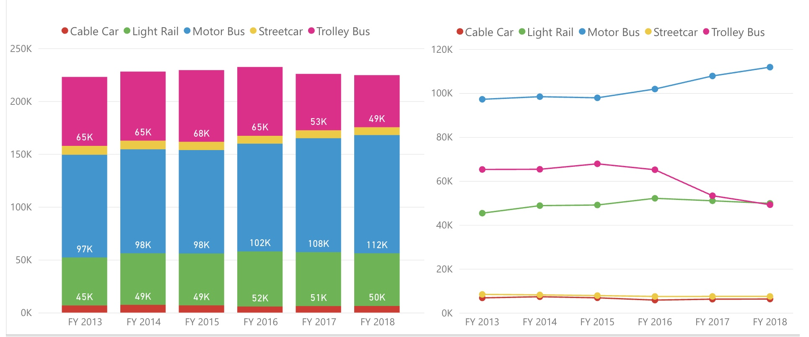

San Francisco
About San Francisco

San Francisco, officially the City and County of San Francisco, is a cultural, commercial, and financial center of Northern California. Colloquial nicknames for San Francisco include The City, SF, Frisco and San Fran.
San Francisco is located on the Northern Central Coast of California, roughly 400 miles north of Los Angeles and 400 miles south of Oregon. San Francisco is the 16th most populous city in the United States, and the fourth most populous in California, with 881,549 residents as of 2019. It covers an area of about 46.89 square miles (121.4 km2), mostly at the north end of the San Francisco Peninsula in the San Francisco Bay Area, making it the second most densely populated large U.S. city, and the fifth most densely populated U.S. county, behind only four of the five New York City boroughs. San Francisco is part of the 12th-largest metropolitan statistical area in the United States by population, with 4.7 million people, and the fourth-largest by economic output, with GDP of $592 billion in 2019. With San Jose, it forms the fifth most populous combined statistical area in the United States, with 9.67 million residents as of 2019.
Cuisine

In a place where nourishment was scarce, bread starter (a dough that has fermented using naturally occurring bacteria and yeast) was a prized possession during the California Gold Rush, allowing miners to turn drab flour into loaves that were both nutritious and delicious. Somehow, the bread tasted tangier and more flavourful than it did elsewhere, and thus San Francisco sourdough was born.
More than 170 years later, San Francisco is synonymous with sourdough bread. Patrons line up daily for fresh-from-the-oven loaves at Tartine Bakery in the city’s Mission District; and at The Mill, a whole-grain sourdough bakery and independent coffee shop just west of San Francisco’s famed “Painted Ladies” Victorians. Walk into any local market and you’ll find baskets filled with sourdough baguettes from the Bay Area’s own Acme Bread and Semifreddi’s; or make a stop at Boudin Bakery in the tourist hub of Fisherman’s Wharf, where steaming clam chowder comes served in carved-out loaves of the bakery’s own sourdough bread.
Economy
San Francisco has a diversified service economy, with employment spread across a wide range of professional services, including financial services, tourism, and (increasingly) high technology. In 2016, approximately 27% of workers were employed in professional business services; 14% in leisure and hospitality; 13% in government services; 12% in education and health care; 11% in trade, transportation, and utilities; and 8% in financial activities. In 2019, GDP in the five-county San Francisco metropolitan area grew 3.8% in real terms to $592 billion. Additionally, in 2019 the 14-county San Jose+San Francisco+Oakland combined statistical area had a GDP of $1.086 trillion, ranking 3rd among CSAs, and ahead of all but 16 countries. As of 2019, San Francisco County was the 7th highest-income county in the United States (among 3,142), with a per capita personal income of $139,405. Marin County, directly to the north over the Golden Gate Bridge, and San Mateo County, directly to the south on the Peninsula, were the 6th and 9th highest-income counties respectively.
Geography
Neighborhoods

The historic center of San Francisco is the northeast quadrant of the city anchored by Market Street and the waterfront. It is here that the Financial District is centered, with Union Square, the principal shopping and hotel district, and the Tenderloin nearby. Cable cars carry riders up steep inclines to the summit of Nob Hill, once the home of the city's business tycoons, and down to the waterfront tourist attractions of Fisherman's Wharf, and Pier 39, where many restaurants feature Dungeness crab from a still-active fishing industry. Also in this quadrant are Russian Hill, a residential neighborhood with the famously crooked Lombard Street; North Beach, the city's Little Italy and the former center of the Beat Generation; and Telegraph Hill, which features Coit Tower. Abutting Russian Hill and North Beach is San Francisco's Chinatown, the oldest Chinatown in North America. The South of Market, which was once San Francisco's industrial core, has seen significant redevelopment following the construction of Oracle Park and an infusion of startup companies. New skyscrapers, live-work lofts, and condominiums dot the area. Further development is taking place just to the south in Mission Bay area, a former railroad yard, which now has a second campus of the University of California, San Francisco and Chase Center, which opened in 2019 as the new home of the Golden State Warriors.
Transportation
Bay Area Rapid Transit's, or BART's, all-electric trains are a fast, inexpensive, and dependable way to get from SFO to San Francisco easily and avoiding traffic. Once you have your luggage, follow the signs for AirTrain, a free tram service to all terminals. Take either the Red or Blue AirTrain line to the Garage G and BART stop in International Terminal G to take BART. BART fares are based on distance traveled; the greater the distance, the higher the fare. A round-trip fare from SFO to downtown San Francisco is $19.30 ($9.65 one-way). Buy your ticket at ticket machines at the SFO BART station. Then place your ticket at the designated slot on an entry faregate. When it pops out from the top slot, remove it to open the gate and board the San Francisco/Antioch train. When you arrive, repeat the same procedure to exit the station. If you don’t have enough value on your ticket to exit, don’t worry - you can add money to the ticket to exit at the Add Fare machine in the station. Clipper Multi-transit cards ($3 surcharge) are also available for purchase at designated ticket machines in BART stations. It can be used on BART and other transit systems including Muni buses and Street cars in San Francisco.
Muni is San Francisco’s bus and metro system that runs throughout the city, operating buses, trains, cable cars and the F-line heritage streetcar. Muni buses remain above ground and on streets while Muni Metro runs on rails and sometimes go underground. Bus stops come in many forms: small bus shelters, yellow paint on street poles, and white paint on streets. Metro stops can be found on an island in the middle of the street and in underground stations. Using the Metro Map, find the nearest Metro to your location. Find more information on how to use Muni and Muni Metro.
History

San Francisco was founded on June 29, 1776, when colonists from Spain established the Presidio of San Francisco at the Golden Gate and Mission San Francisco de Asís a few miles away, both named for Francis of Assisi. The California Gold Rush of 1849 brought rapid growth, making it the largest city on the West Coast at the time. San Francisco became a consolidated city-county in 1856.
Notable Events
The California Gold Rush brought a flood of treasure seekers (known as "forty-niners", as in "1849"). With their sourdough bread in tow, prospectors accumulated in San Francisco over rival Benicia, raising the population from 1,000 in 1848 to 25,000 by December 1849. The promise of great wealth was so strong that crews on arriving vessels deserted and rushed off to the gold fields, leaving behind a forest of masts in San Francisco harbor. Some of these approximately 500 abandoned ships were used at times as storeships, saloons and hotels; many were left to rot and some were sunk to establish title to the underwater lot. By 1851, the harbor was extended out into the bay by wharves while buildings were erected on piles among the ships. By 1870, Yerba Buena Cove had been filled to create new land. Buried ships are occasionally exposed when foundations are dug for new buildings. California was quickly granted statehood in 1850, and the U.S. military built Fort Point at the Golden Gate and a fort on Alcatraz Island to secure the San Francisco Bay. Silver discoveries, including the Comstock Lode in Nevada in 1859, further drove rapid population growth. With hordes of fortune seekers streaming through the city, lawlessness was common, and the Barbary Coast section of town gained notoriety as a haven for criminals, prostitution, and gambling.
Major Attractions
Golden Gate Bridge

The Golden Gate Bridge is a California icon gracing San Francisco Bay. It is the most photographed site in the city, with the orange structure backed by blue water, or in many cases, peaking through low lying cloud. At night, the flood-lit structure is equally striking.
Alcatraz
The historic and notorious Alcatraz penitentiary, located on Alcatraz Island in San Francisco Bay, is one of America's most infamous prisons. It operated for almost thirty years, closing in 1963 and re-opening as a tourist attraction in 1973. Some of America's most well-known criminals were inmates here, including Al Capone and the "Birdman," who would later form the basis for the fictional movie The Birdman of Alcatraz.
Cable Cars
Cable Cars were introduced in 1873 to help locals contend with the many hills the city is built on. Today, the few remaining cable cars offer tourists a great way to explore the city in historic fashion. Since 1964, these tram-like vehicles have had the unique distinction of being the only public transport system to be declared a historic monument.